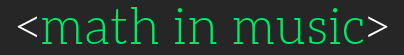

Busque por uma música e veja sua:
>> Dançabilidade: Quanto maior o %, mais fácil de dançar a música.
>> Energia: Quanto maior o %, mais intensa, barulhenta e rápida será a música.
>> BPM: Parâmetro utilizado para medir o pace da música.
>> Valência: Quanto maior o %, mais positiva e eufórica será a música.
>> Acústica: Quanto maior o %, mais acústica será a música.